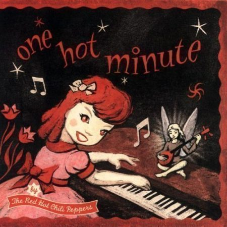
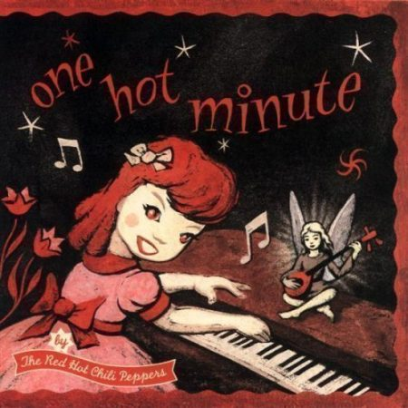
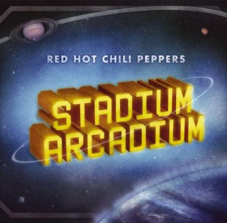
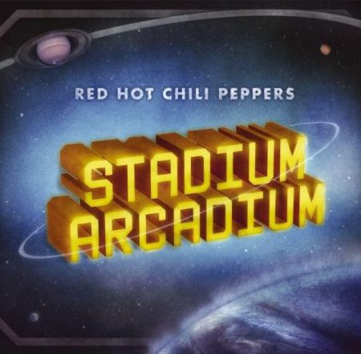

Red Hot Chili Peppers es una banda de rock alternativo formada en Los Ángeles, California en 1983. La formación original de la banda incluía a Anthony Kiedis en voz, Hillel Slovak en guitarra, Flea en bajo y Jack Irons en batería.
El grupo se dio a conocer en la escena musical de Los Ángeles en los años 80, con un sonido que fusionaba el funk, el punk y el rock. En 1984, lanzaron su álbum debut, "The Red Hot Chili Peppers", que fue seguido por "Freaky Styley" en 1985.
Sin embargo, la banda sufrió un gran golpe en 1988 cuando Slovak falleció por una sobredosis de drogas. Irons, quien era amigo cercano de Slovak, también dejó la banda en solidaridad. La banda contrató a John Frusciante como nuevo guitarrista y a Chad Smith como baterista, lo que daría lugar a la formación clásica de Red Hot Chili Peppers.
Con Frusciante, la banda lanzó una serie de álbumes clásicos, como "Mother's Milk" en 1989, "Blood Sugar Sex Magik" en 1991 y "Californication" en 1999. La banda se convirtió en una de las más populares de la década de 1990, con hits como "Give It Away", "Under the Bridge" y "Scar Tissue".
Sin embargo, en 2009, Frusciante dejó la banda por segunda vez. Fue reemplazado por Josh Klinghoffer, quien participó en los álbumes "I'm with You" en 2011 y "The Getaway" en 2016.
A lo largo de su carrera, Red Hot Chili Peppers ha vendido más de 80 millones de discos en todo el mundo y ha ganado múltiples premios, incluyendo siete premios Grammy. La banda ha sido incluida en el Salón de la Fama del Rock and Roll en 2012.


 



 
